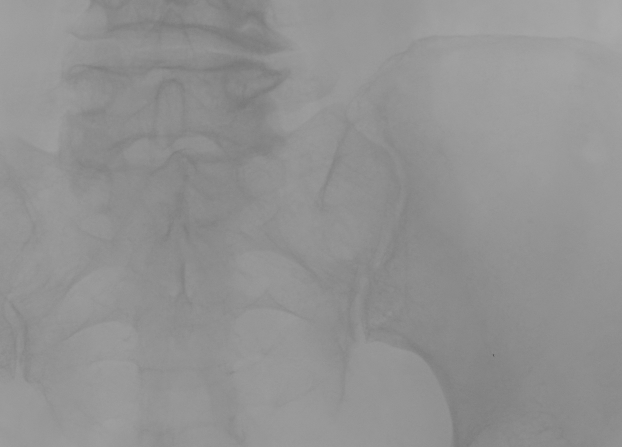

USM Enhancement
Unsharp Mask - Mejora por Enmascaramiento No Nítido
FSIV - Práctica 3 - Ejercicio 1

Imagen original
→

Resultado con USM
Objetivo: Mejorar nitidez y detalles reforzando altas frecuencias